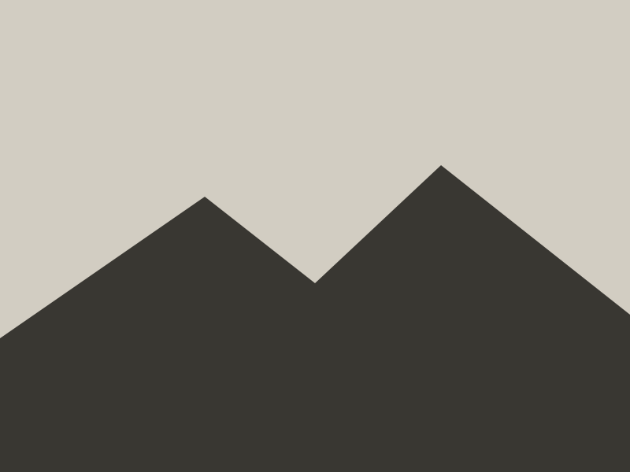

Every hat helps fund land care across the Sky Islands—from fencing
open range and reseeding native grasses to building a network of autonomous water carts that keep old-growth trees alive through drought and between monsoons. Along the way, we’re helping foster the next generation of land stewards: people who know how to care for the land and the beings that live on it.